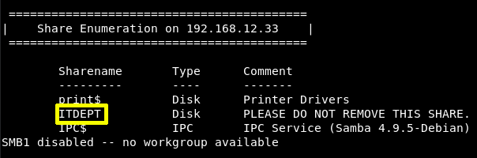
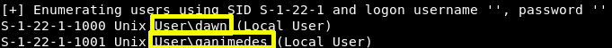

3.3 Enumerate SMB
It's time to enumerate this machine’s SMB Service.
$ enum4linux -a 192.168.12.33
Output:

We have the ITDEPT directory we found earlier. This means this directory is accessible through SMB.
We have two users namely, “dawn” and” ganimedes”.

Index